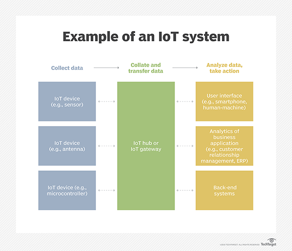

Internet of Things
links
How Does IoT works?
An IoT ecosystem consists of web-enabled smart devices that use embedded systems, such as processors, sensors and communication hardware, to collect, send and act on data they acquire from their environments. IoT devices share the sensor data they collect by connecting to an IoT gateway or other edge device where data is either sent to the cloud to be analyzed or analyzed locally. Sometimes, these devices communicate with other related devices and act on the information they get from one another. The devices do most of the work without human intervention, although people can interact with the devices -- for instance, to set them up, give them instructions or access the data.
The connectivity, networking and communication protocols used with these web-enabled devices largely depend on the specific IoT applications deployed
IoT can also make use of artificial intelligence (AI) and machine learning to aid in making data collecting processes easier and more dynamic.
